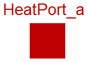

Modelica.Thermal.HeatTransfer.Interfaces.HeatPort_a
Modelica.Thermal.HeatTransfer.Interfaces.HeatPort_a
Modelica.Thermal.HeatTransfer.Interfaces.HeatPort_a
Modelica.Thermal.HeatTransfer.Interfaces.HeatPort_a
Thermal port for 1-dim. heat transfer (filled rectangular icon)

This connector is used for 1-dimensional heat flow between components. The variables in the connector are:
T Temperature in [Kelvin]. Q_flow Heat flow rate in [Watt].
According to the Modelica sign convention, a positive heat flow rate Q_flow is considered to flow into a component. This convention has to be used whenever this connector is used in a model class.
Note, that the two connector classes HeatPort_a and HeatPort_b are identical with the only exception of the different icon layout.
Extends from HeatPort (Thermal port for 1-dim. heat transfer).
| Type | Name | Description |
|---|---|---|
| Temperature | T | Port temperature [K] |
| flow HeatFlowRate | Q_flow | Heat flow rate (positive if flowing from outside into the component) [W] |
Thermal port for 1-dim. heat transfer
| Type | Name | Description |
|---|---|---|
| Temperature | T | Port temperature [K] |
| flow HeatFlowRate | Q_flow | Heat flow rate (positive if flowing from outside into the component) [W] |